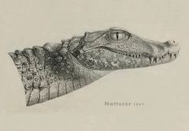
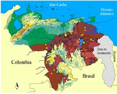

Paleosuchus palpebrosus
| Babo morichalero | |
|---|---|
|  | |
| Riesgo de extinción | |
 Datos insuficientes (UICN) | |
| Clasificación científica | |
| Reino: | Animalia |
| Filo: | Chordata |
| Clase: | Reptilia |
| Orden: | Crocodilia |
| Familia: | Alligatoridae |
| Género: | Paleosuchus |
| Especie: | P. palpebrosus |
| Nombre binomial | |
|
Paleosuchus palpebrosus (Cuvier 1807) | |
| Distribución | |
|
 Mapa de distribución de Paleosuchus palpebrosus | |
Contenido
Taxonomía
Nombres comunes
Babo morichalero, morichalero, aricué (nombre Yaruro); cachirre, jacaré coroa (Colombia), jacaré paguá (Brasil); dwarf caiman, smooth fronted caiman. Cuvier’s smooth-fronted caiman.
Notas taxonómicas
El nombre específico (palpebrosus) deriva del latín palpebra que significa párpado, lo que daría a entender que “posee párpados prominentes” (Magnusson 1992).
Sinónimos
Crocodilus palpebrosus var. 1 Cuvier 1807; Crocodilus (Alligator) palpebrosus Merrem 1820; Jacaretinga moschifer Spix 1825; Champsa palpebrosa, Wagler 1830; Alligator palpebrosus - Duméril y Bibron 1836; Champsa gibbiceps, Natterer 1841; Caiman palpebrosus, Gray 1844; Caiman (Aromosuchus) palpebrosus, Gray 1862; Paleosuchus palpebrosus, Muller 1924; Crocodylus palpebrosus, Werner 1933; Palaeosuchus palpebrosus, Campbell y Winterbothan 1985 (Lapsus) (Paleosuchus palpebrosus - Gorzula y Señaris 1999 (ver citas y datos adicionales en Magnusson 1992 y www.reptile-database.org
Descripción
El babo morichalero es considerado el más pequeño de los crocodilios vivientes. Rueda-Almonacid y col. (2007) señalaron que los machos no superan 1.75 m de longitud total y que las hembras raramente superan 1.20 m, pero Campos y col (2010) encontraron que en algunas regiones de Brasil los machos pueden superar los dos metros y las hembras llegar a 1.40 m de longitud total. Tienen una conformación del cuerpo robusta, similar al de la baba (Caiman crocodilus) pero se distingue fácilmente de esta especie (al igual que ocurre con su congénere P. trigonatus) por su coloración más oscura (por lo que se les da en ocasiones el nombre de “babo negro”) y por la ausencia de borde transversal anterior a los ojos, entre las órbitas oculares. La coloración dorsal del cuerpo es gris oscuro a negro. La cabeza es parda rojiza en juveniles y se hace marrón oscura en los individuos mayores. Las crías presentan tabla craneal con manchas amarillentas. Las mandíbulas presentan manchas más claras, más notorias en individuos jóvenes. El vientre presenta una coloración crema, con manchas marrones que, en algunos individuos, cubren la mayor parte de su superficie ventral. Como todos los aligatóridos, P. palpebrosus] carece de órganos sensoriales inter-tegumentarios (OSI) en las escamas ventrales y los dientes en la mandíbula superior son los únicos visibles cuando el animal tiene la boca cerrada. La cabeza de P. palpebrosus se distingue de la de P. trigonatus por presentar la punta del hocico levantada y una apariencia más robusta y menos alargada. Las aristas rostrales (cantus rostralis) están bien definidas entre los lacrimales y los cuartos dientes maxilares. Las aberturas supratemporales (fenestrae supratemporales) no son distinguibles ni en juveniles ni en adultos. Presenta un gran desarrollo de los osteodermos en todo el cuerpo y sus escamas dorsales, particularmente las de la nuca (o cervicales), son muy prominentes y de bordes muy rígidos y filosos. Los párpados son lisos y osificados. El número mínimo de escamas en las filas dorsales de la región sacra (entre las extremidades posteriores) es de cuatro (Medem 1967, Magnusson 1992, CITES 1995, Seijas 2007). No hay datos sobre los aspectos reproductivos de P. palpebrosus en Venezuela, pero la información disponible al respecto es también escasa para los otros países donde se distribuye esta especie. Las hembras pueden llegar a la madurez sexual a los 60 cm de longitud hocico cloaca (Campos y col 2013) y construyen nidos de montículo con material vegetal y lodo, de manera similar a la baba (C. crocodilus). El número de huevos por nidada de los P. palpebrosus varía entre 10 y 19 (Magnusson y Campos 2010), cifras relativamente bajas si se comparan con las de otros Crocodilia, pero que se corresponde muy bien a lo que se esperaría de una especie de pequeño tamaño (Thorbjarnarson 1996). De los datos de Medem (1981) para localidades de los llanos colombianos, se infiere que la estrategia de esta especie es similar a la de la baba; es decir, la postura de los huevos ocurriría a mediados del período lluvioso y el nacimiento de las crías al final de las lluvias o comienzo del período seco. Se alimenta de invertebrados (incluyendo crustáceos), moluscos y vertebrados (mamíferos, aves, serpientes, anuros y peces) (Campos y col.1995; Botero-Arias, 2007 y González, 2010)
Distribución
El babo morichalero se encuentra en cuerpos de agua de las tierras bajas de las cuencas del Orinoco y del Amazonas, así como en los ríos que drenan hacia el Atlántico entre los grandes sistemas fluviales mencionados, pero su distribución se extiende más al sur, a lo largo del escudo brasileño, hasta las cuencas de los ríos Paraná y Paraguay, así como en la cuenca del río San Francisco de los estados de Bahía y Minas Gerais de dicho país (Magnusson 1992). Existen muy pocos estudios sobre P. palpebrosus en Venezuela, por lo que su distribución en el país se basa principalmente en registros de museos y reportes sobre encuentros casuales con la especie señalados en la literatura (Godshalk 1982, Medem 1983, Seijas 2007). La especie se encuentra en los afluentes del río Orinoco en sus dos márgenes, pero la mayor parte de los registros de museos corresponden a localidades en los estados Amazonas y Bolívar. La localidad más al norte de P. palpebrosus está en el río San Juan en el estado Monagas (Donoso-Barros 1966), en una cuenca no conectada directamente, en la actualidad, con el río Orinoco. Hay registros para los llanos de Monagas, Anzoategüi y Apure, por lo que es probable que se encuentre en hábitats adecuados (morichales, por ejemplo) al sur del estado Guárico. El hábitat principal está representado por ríos y riachuelos en zonas boscosas. P. trigonatus parece estar más restringido a ese tipo de ambientes que P. palpebrosus, el cual, de acuerdo con Magnusson (1992) también ocupa bosques inundados cercanos a ríos principales, riachuelos de sabanas, lagos aislados y canales. Ambas especies parecen encontrarse principalmente en ríos de aguas claras y aguas negras pobres en nutrimentos. Varias de las localidades de P. palpebrosus al norte del Orinoco corresponden a zonas de bosques de palmares (Mauritia spp) conocidos como morichales.
Situación
'Lista Roja Venezuela' Datos Insuficientes
'Lista Roja internacional' Preocupación Menor
Algunos de los hábitats que ocupa P. palpebrosus son difíciles de muestrear, por tratarse de cuerpos de agua no navegables en áreas boscosas, lo cual explica parcialmente la poca información sobre la abundancia de esta especie en el país. Los índices de abundancia publicados para localidades de Venezuela están por lo general por debajo de 1 ind/km muestreado, con una cifra máxima de 2.27 ind/km) cifras muy bajas si se comparan con las que puede alcanzar C. crocodilus incluso en localidades donde estas especies coexisten (Gorzula y Paolillo 1986, Pacheco 2009, Seijas 2011). Esos valores de abundancia son, sin embargo, similares a los reportados para ambientes de várzea (0,45 a 1,54 ind /km) en los alrededores del río Solimoes (Botero-Arias, 2007). En cierto tipo de hábitats, como por ejemplo ríos muy someros y de escasa corriente, P. palpebrosus puede ser la especie de Crocodilia dominante (Pacheco 2009, González 2010). No existe información suficiente como para discutir sobre la estructura de tamaños de las poblaciones de los Paleosuchus en Venezuela. Solamente el trabajo de Pacheco (2009) presenta datos al respecto. Con base en 60 individuos capturados u observados en cuatro ríos del estado Anzoátegui, este autor determinó que la población estuvo dominada por adultos. Se capturaron 1,5 machos por cada hembra. Las categorías de tamaño definidas por este autor fueron: juveniles, individuos menores a 20 cm de LCC; sub-adultos, individuos desde 20 hasta 39,9 cm de LCC, y adultos, aquellos con 40 ó más cm de LCC.
Amenazas
La información sobre el estado poblacional de P. palpebrosus es muy escasa, pero el hecho de que habiten zonas por lo general despobladas hace suponer que no está amenazadas de manera inminente. La destrucción de hábitat por la minería de oro y la contaminación mercurial asociada a esa actividad ha causado un impacto severo en algunas áreas al sur del Orinoco. En el caso particular de P. palpebrosus, la cacería de subsistencia y las actividades de destrucción y contaminación de morichales en las sabanas de Anzoátegui y Monagas, debido a la actividad petrolera, son factores adversos a los que hay que prestarle atención en el corto plazo (Rodríguez y Rojas-Suárez 1995). No tienen presión de cacería por el comercio de sus pieles ya que éstas son de poco valor en el mercado peletero (Campos y col. 1995).
Conservación
Se les asignó la categoría “Insuficientemente conocido” en el Libro Rojo de la Fauna Venezolana (Rodríguez y Rojas-Suárez 1995, 2008). Una primera medida de conservación propuesta es el de intensificar los estudios sobre su situación actual, particularmente en ambientes amenazados en la faja petrolífera del Orinoco. La especie está incluida en el Apéndice de II de Cites y su situación de amenaza es de Bajo Riesgo y Preocupación Menor, de acuerdo al Libro Rojo de la IUCN (www.iucnredlist.org /details/46587/0, consultado el 13/11/2013).
Editores y Colaboradores
Andrés E. Seijas y César Molina
Referencias
Botero-Árias, R. (2007). Padroes de movimento, uso de microhábitat e dieta do jacaré paguá, Paleosuchus palpebrosus (Crocodylia: Alligatoridae), em uma floresta de paleovárzea ao sul do rio Solimoes, Amazonia Central, Brasil. Manaus, Brasil: Universidade Federal do Amazonas-UFAM.
Campos, Z., Coutinho, M. y Abercrombie, C. (1995). Size structure and sex ratio of dwarf caiman in the serra amolar, pantanal, brazil. Herpetological Journal 5: 321-322.
Campos, Z., Magnusson, W. E. y Marques. (2013). Growth rates of Paleosuchus palpebrosus at the southern limit of its range. Herpetologica 69:405-410.
Campos, Z., T. Sanaiotti y W.E. Magnusson. 2010. Maximum size of dwarf caiman, Paleosuchus palpebrosus (Cuvier, 1807) in the Amazon and habitats surroundings the Pantanal, Brazil. Amphibia-Reptilia 31:439–442.
CITES (1995). Guía de identificación de CITES –Cocodrilos: guía de identificación de los cocodrilos protegidos por la Convención sobre el Comercio Internacional de Especies Amenazadas de Fauna y Flora Silvestres. Minister of Supply and Services Canada.
Donoso-Barros, R. (1966). Contribución al conocimiento de los cocodrilos de Venezuela (continuación). Physis 26(71): 15-32.
Godshalk, R. (1982). The habitat and distribution of Paleosuchus in Venezuela. Paper presented at the Crocodiles, IUCN Publ. (N.S.). Proceeding of the 5th Working Meeting of the Crocodile Specialist Group. Species Survilal Commission, IUCN.
González, G. A. (2010). Caracterización del hábitat y composición de la dieta del babo morichalero (Paleosuchus palpebrosus) en los Llanos Orientales, estado Anzoátegui. Tesis de Licenciatura. Escuela de Biología, Facultad de Ciencias. Universidad Central de Venezuela, Caracas.
Gorzula, S. y Señaris, J. C. (1998). Contribution to the herpetofauna of the Venezuelan Guayana. I. A data base. Caracas: Ediciones Tamandúa.
Gorzula, S.y Paolillo, A. (1986). La ecología y el estado actual de los alligatóridos de la Guayana venezolana. In Crocodiles: 7ma Reunion Internacional del Grupo de Especialistas en Crocodilidos UICN Caracas, 21/28 Octubre 1984.
Magnusson, W. E. (1992). Paleosuchus palpebrosus. Catalogue of American Amphibians and Reptiles 554: 1-2.
Magnusson, W. E. y Campos, Z. (2010). Cuvier’s Smooth-fronted Caiman Paleosuchus palpebrosus. In Crocodiles Status Survey and Conservation Action Plan Third Edition, ed by SC Manolis and C Stevenson Crocodile Specialist Group: Darwin: 40-42. Manolis, C. and Stevenson, C. (Eds.). Darwin, Australia: Crocodile Specialist Group.
Medem, F. (1967). El género "Paleosuchus" en Amazonia. Atas do Simposio sobre a Biota Amazonica: 141-162.
Medem, F. (1981). Los Crocodylia de Sur América. Los Crocodylia de Colombia. Universidad Nacional de Colombia y Fondo Colombiano de Investigaciones Científicas y Proyectos Especiales. COLCIENCIAS. Editorial Carrera 7ª Ltda, Bogotá, Colombia.
Medem, F. (1983). Los Crocodylia de Sur América. Bogotá: Universidad Nacional de Colombia y Fondo Colombiano de Investigaciones Científicas y Proyectos Especiales. COLCIENCIAS. Editorial Carrera 7ª Ltda, Bogotá, Colombia.
Pacheco, A. D. (2009). Distribución, abundancia y estructura poblacional del babo morichalero (Paleosuchus palpebrosus) en los Llanos Orientales del Estado Anzoátegui. Tesis de Licenciatura. Escuela de Biología, Facultad de Ciencias. Universidad Central de Venezuela, Caracas.
Rodríguez, J. P. y Rojas-Suárez, F. (1995). Libro Rojo de la fauna Venezolana. Caracas: Ex Libris.
Rodríguez, J. P. y Rojas-Suárez, F. (2008). Libro Rojo de la fauna Venezolana. (3ra. ed). Caracas: Provita y Shell de Venezuela. S.A. Caracas. 364 pp.
Rueda-Almonacid, J. V., Carr, J. L., Mittermeier, R. A., Rodríguez-Mahecha, J. V., Mast, R. B., Vogt, R. C., Rhodin, A. G. J., Ossa-Velásquez, J. d. l., Rueda, J. N. y Mittermeier, C. G. (2007). Las tortugas y los cocodrilianos de los países andinos del trópico Editorial Panamericana, Formas e Impresos Bogotá, Colombia. 538 pp.
Seijas, A. E. (2007). Características distintivas y estado del conocimiento de las especies del género Paleosuchus (Crocodylidae; Alligatoridae) en Venezuela. Mem Soc Cienc Nat La Salle 166: 27-44.
Seijas, A. E. (2011). Los Crocodylia de Venezuela: Ecología y Conservación. Caracas: Academia de Ciencias Físicas, Matemáticas y Naturales.
Thorbjarnarson, J. B. (1996). Reproductive characteristics of the order Crocodylia. Herpetologica 52: 8-24.